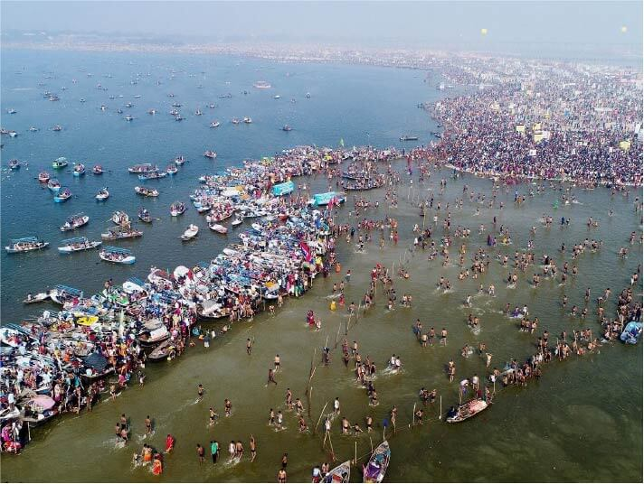

| Top 5 | Place | Description | Location |
|---|---|---|---|
| 1 |

Gavi |
One of the most beautiful places in India, Gavi is a small village tucked between tea estates and wide and dense forests. A unique project in itself, the place is a model of eco-tourism site bringing to the world its spellbinding abundance in flora and fauna. Gavi is situated some 14 km away from the famed Periyar Tiger Reserve and is heaven on Earth, quite literally. |
|
| 2 |

Triveni Sangamam |
Situated on the way to Sabarimala, the Thriveni Sanganam as the name suggests is the point where the Holy Pamba River meets with the Manimala River in its north and with the Achankovil River in the south. The devotees stop here to take a dip in the holy water to wash away their sins. Millions of visitors also come here to enjoy the beautiful landscape of the place. The Pamba River, also known as the Dakshina Ganga or the Ganges of South India, is the third longest river in the southern part of the country which begins flowing from the Western Ghats. Devotees believe that it was near this holy river that King Rajasekara gained a vision of Lord Ayappa. |
|